1과목: 응용역학
1. 반지름이 r인 중실축(中實軸)과, 바깥 반지름이 r이고 안쪽 반지름이 0.6r인 중공충(中空軸)이 동일 크기의 비틀림 모멘트를 받고 있다면 중실축(中實軸):중공충(中空軸)의 최대 전단응력비는?
2. 그림과 같은 캔틸레버보에서 자유단 A의 처짐은? (단, EI는 일정함)
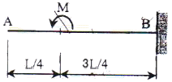
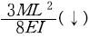
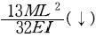
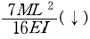
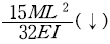
3. 그림에서 직사각형의 도심축에 대한 단면상승 모멘트 Ixy의 크기는?
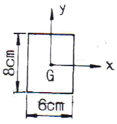
4. 길이가 3m이고 가로 20cm, 세로30cm인 직사각형 단면의 기둥이 있다. 좌굴응력을 구하기 위한 이 기둥의 세장비는?
5. 다음의 단순보에서 A점의 반력이 B점의 반력의 3배가 되기 위한 거리는 x는 얼마인가?
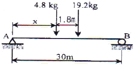
6. 아래 그림과 같은 라멘구조물에서 A점의 반력 는?
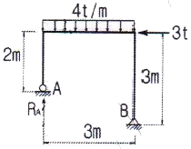
7. 그림과 같은 트러스에서 A점에 연직하중 P가 작용할 때 A점의 연직처짐은? (단, 부재의 축 강도는 모두 EA이고, 부재의 길이는 AB=3ℓ, AC=5ℓ이며, B와 C의 거리는 4ℓ이다.)
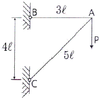
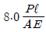
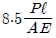
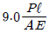
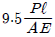
8. 다음 구조물의 변형에너지의 크기는? (단, E, I, A는 일정하다.)
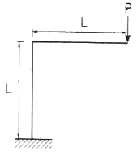
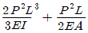
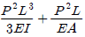
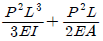
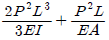
9. 균질한 단면봉이 그림과 같이 P1, P2, P3의 하중을 B, C, D점에서 받고 있다. 각 구간의 거리 a=1.0m, b=0.5m, c=0.5m이고, P2=10t, P3=4t의 하중이 작용할 때 D점에서의 수직방향 변위가 일어나지 않기 위한 하중 P1은?
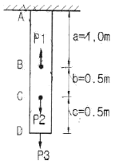
10. 그림의 보에서 지점 B의 휨모멘트는? (단, EI는 일정하다.)
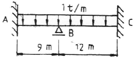
11. 그림의 트러스에서 a부재의 부재력은?
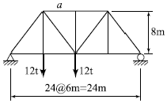
12. 다음의 그림에 있는 연속보의 B점에서의 반력을 구하면? ( E=2.1×106kg/cm2, I=1.6×104cm4))
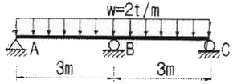
13. 다음 단순보의 지점 B에 모멘트 M 가 작용할 때 지점 A에서의 처짐각(θA)은? (단, EI는 일정하다.)
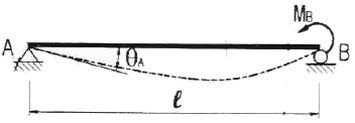
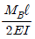
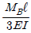
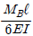
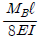
14. 다음 중에서 정(+)과 부(-)의 값을 모두 갖는 것은?
15. 그림과 같이 두 개의 나무판이 못으로 조림된 T형 보에서 단면에 작용하는 전단력 (V)이 155kg이고 한 개의 못이 전단력 70kg을 전달할 경우 못의 허용 최대 간격은 약 얼마인가? (단, 1135.0cm)(오류 신고가 접수된 문제입니다. 반드시 정답과 해설을 확인하시기 바랍니다.)
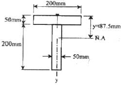
16. 다음 그림과 같은 단순보에 이동하중이 작용하는 경우 절대 최대 휨모멘트는 얼마인가?
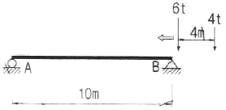
17. 바닥은 고정, 상단은 자유로운 기둥의 좌굴 형상이 그림과 같을 때 임계하중은 얼마인가?
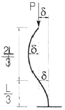
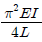
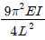
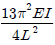
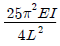
18. 아래의 표에서 설명하는 것은?
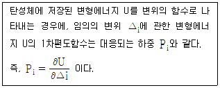
19. 다음 그림과 같은 r=4m인 3힌지 원호아치에서 지점 A에서 2m 떨어진 E점의 휨모멘트의 크기는 약 얼마인가?
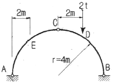
20. 그림의 AC, BC 에 작용하는 힘 FAC, FBC 의 크기는?
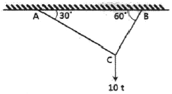
2과목: 측량학
21. 초점거리 20cm인 카메라로 경사 30°로 촬영된 사진 상에서 연지점 m과 등각점 j와의 거리는?
22. 하천측량에 대한 설명 중 옳지 않은 것은?
23. 등고선의 성질에 대한 설명으로 옳지 않은 것은?
24. 수준측량에 관한 설명으로 옳은 것은?
25. 수준측량에서 발새할 수 있는 정오차에 해당하는 것은?
26. 완화곡선에 대한 설명으로 틀린 것은?
27. 그림과 같은 도로 횡단면도의 단면적은? (단, O을 원점으로 하는 좌표(x, y)의 단위:[m])
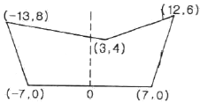
28. 지리정보시스템(GIS) 데이터의 형식 중에서 벡터형식의 객체자료 유형이 아닌 것은?
29. 평탄지를 1:25000으로 촬영한 수직사진이 있다. 이때의 초점거리 10cm, 사진의 크기 23cm×23cm, 종중복도 60%, 횡중복도 30% 일 때 기선고도비는?
30. 대단위 신도시를 건설하기 위한 넓은 지형의 정지 공사에서 토량을 계산하고자 할 때 가장 적당한 방법은?
31. 표준길이보다 5mm가 늘어나 있는 50m 강철줄자로 250m×250m인 정사각형 토지를 측량하였다면 이 토지의 실제면적은?
32. 정확도 1/5000을 요구하는 50m 거리 측량에서 경사거리를 측정하여도 허용되는 두 점간의 최대 높이차는?
33. A와 B의 좌표가 다음과 같을 때 측선 AB의 방위각은?
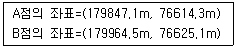
34. 어느 각을 관측한 결과가 다음과 같을 때, 최화값은? (단, 괄호 안의 숫자는 경중률)(오류 신고가 접수된 문제입니다. 반드시 정답과 해설을 확인하시기 바랍니다.)
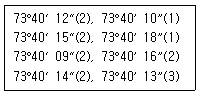
35. 단곡선 설치에 있어서 교각 I=60°, 반지름 R=200m, 곡선의 시점 B.C.=No.8+15m일 때 종단현에 대한 편각은? (단, 중심말뚝의 간격은 20m 이다.)
36. 지형을 표시하는 방법 중에서 짧은 선으로 지표의 기복을 나타내는 방법은?
37. 수심이 H인 하천의 유속을 3점법에 의해 관측할 때, 관측 위치로 옳은 것은?
38. GNSS 측량에 대한 설명으로 옳지 않은 것은?
39. 완화곡선 중 클로소이트에 대한 설명으로 틀린 것은?
40. 삼각측량을 위한 기준점성과표에 기록되는 내용이 아닌 것은?
3과목: 수리학 및 수문학
41. 직경 10cm인 연직관 속에 높이 1m만큼 모래가 들어있다. 모래면 위의 수위를 10cm로 일정하게 유지시켰더니 투수량 Q=4L/hr 이었다. 이 때 모래의 투수계수 k는?
42. 개수로의 흐름에 대한 설명으로 옳지 않은 것은?
43. 반지름 (oP)이 6m이고, θ'=30°인 수문이 그림과 같이 설치되었을 때, 수문에 작용하는 전수압(저항력)은?
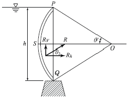
44. 유효 강수량과 가장 관계가 깊은 유출량은?
45. 강우강도 공식에 관한 설명으로 틀린 것은?
46. 하천의 임의 단면에 교량을 설치하고자 한다. 원통형 교각 상류(전면)에 2m/s의 유속으로 물이 흘허간다면 교각에 가해지는 항력은? (단, 수심은 4m, 교각의 직경은 2m, 항력계수는 1.5이다.)
47. 원형단면의 수맥이 그림과 같이 곡면을 따라 유량 0.018m3/s가 흐를 때 x방향의 분력은? (단, 관내의 유석은 9.8m/s, 마찰은 무시한다)
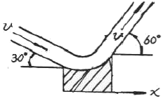
48. 강수량 자료를 분석하는 방법 중 이중누가해석(double mass analysis)에 대한 설명으로 옳은 것은?
49. 지름 D인 원관에 물이 반만 차서 흐를 때 경심은?
50. SCS방법(NRCS 유출곡선 번호방법)으로 초과강우량을 산정하여 유출량을 계산할 때에 대한 설명으로 옳지 않은 것은?
51. 그림에서 A와 B의 압력차는? ( 단, 수은의 비중=13.50)
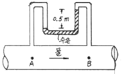
52. xy 평면이 수면에 나란하고, 질량력의 x, y ,z축 방향성분을 X, Y , Z 라 할 때, 정지평형상태에 있는 액체내부에 미소 육면체의 부피를 dx, dy, dz라 하면 등압면(等壓面)의 방정식은?
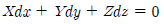
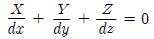
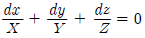
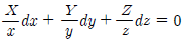
53. 오리피스에서 Cc를 수축계수, Cv를 유속계수라 할 때 실제유량과 이론유량과의 비 (C)는?
54. 유역내의 DAD해석과 관련된 항목으로 옳게 짝지어 진 것은?
55. 사각형 개수로 단면에서 한계수심(hc)과 비에너지(he)의 관계로 옳은 것은?
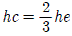
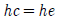
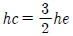
56. 매끈한 원관 속으로 완전발달 상태의 물이 흐를 때 단면의 전단응려은?
57. 폭 9m의 직사각형수로에 16.2m3/s의 유량이 92cm의 수심으로 흐르고 있다. 장파의 전파속도 C와 비에너지 E는? (단, 에너지보정계수 α=1.0)
58. 폭 35cm인 직사각형 위어(weir)의 유량을 측정하였더니 0.03m3/s 이었다. 월류수심의 측정에 1mm의 오차가 생겼다면, 유량에 발생하는 오차(%)는? (단, 유량계산은 프란시스(Francis)공식을 사용하되 월류 시 단면수축은 없는 것으로 가정한다.)
59. 관수로에서의 미소 손실(Minor Loss)은?
60. 동해의 일본 측으로부터 300km 파장의 지진해일이 발생하여 수심 3000m의 동해를 가로질러 2000km 떨어진 우리나라 동해안에 도달한다고 할 때, 걸리는 시간은? (단, 파속 C=√(gh) , 중력가속도는 9.8m/s2 이고 수심은 일정한 것으로 가정)
4과목: 철근콘크리트 및 강구조
61. 그림과 같이 복철근 직사각형 단면에서 응력 사각형의 깊이 a의 값은 얼마인가? (단, fck=24MPa, fy=350MPa, AS=5730mm2, AS'=1980mm2)
62. 연속보 또는 1방향 슬래브의 철근콘크리트 구조를 해석하고자 할 때 근사해법을 적용할 수 있는 조건에 대한 설명으로 틀린 것은?
63. 압축 이형철근의 겹침이음길이에 대한 다음 설명으로 틀린 것은? (단, db는 철근의 공칭지름)
64. 옹벽의 구조해석에 대한 설명으로 잘못된 것은?
65. 그림과 같은 캔틸레버보에 활하중 WL=25kN/m이 작용할 때 위험단면에서 전단철근이 부담해야 할 전단력은? (단, 콘크리트의 단위무게=25kN/m3, fck=24MPa, fy=300MPa이고, 하중계수와 하중조합을 고려하시오)
66. 그림과 같은 용접 이음에서 이음부의 응력은 얼마인가?
67. b=300mm, d=450mm, As=3-D25=1520mm2가 1열로 배치된 단철근 직사각형 보의 설계 휨강도(øMn)은 약 얼마인가? (단, fck=28MPa, fy =400MPa 이고 과소철근보이다.)
68. 강도설계법에 의해서 전단 철근을 사용하지 않고 계소 하중에 의한 전단력 Vu =50kN을 지지하려면 직사각형 단면보의 최소면적(bwd)은 약 얼마인가? (단, fck =28MPa, 최소 전단철근도 사용하지 않은 경우)
69. 프리스트레스트 콘크리트에 대한 설명 중 잘못 된 것은?
70. 지름 450mm인 원형 단면을 갖는 중심축하중을 받는 나선 철근 기둥에서 강도 설계법에 의한 축방향 설계강도(øPn)는 얼마인가? (단, 이 기둥은 단주이고, fck=27MPa, fy=350MPa, Ast=8-D22=3096mm2, 압축지배단면이다.)
71. 처짐을 계산하지 않은 경우 단순지지된 보의 최소 두께(h)로 옳은 것은? (단, 보통콘크리트(mc=2300kg/m3) 및 fy =300MPa인 철근을 사용한 부재의 길이가 10m인 보)
72. 전단철근이 부담하는 전단력 Vs =150kN일 때, 수직스터럽으로 전단보강을 하는 경우 최대 배치간격은 얼마 이하인가? (단, fck=280MPa, 전단철근 1개 단면적=125mm2, 횡방향 철근의 설계기준항복강도(fyt)=400MPa, bw =300mm, d=500mm)
73. 그림과 같은 단면의 균열모멘트 Mcr 은? (단, fck=24MPa, fy =400MPa)
74. 주어진 T형 단면에서 전단에 대해 위험단면에서 Vud/Mu=0.28 이었다. 휨철근 인장강도의 40% 이상의 유효 프리스트레스트 힘이 작용할 때 콘크리트의 공칭전단강도 (Vc)는 얼마인가? (단, fck=45MPa, Vu :계수전단력, Mu :계수휨모멘트, d:앞축측 표면에서 긴장재 도심까지의 거리)
75. 설계기준 항복강도가 400MPa인 이형철근을 사용한 철근콘크리트 구조물에서 피로에 대한 안전성을 검토하지 않아도 되는 철근 응력범위로 옳은 것은? (단, 충격을 포함한 사용 활하중에 의한 철근의 응력범위)
76. 다음 그림과 같이 직경 25mm의 구멍이 있는 판(plate)에서 인장응력 검토를 위한 순폭은 약 얼마인가?
77. 아래 그림과 같은 PSC보에 활하중(wl) 18kN/m이 작용하고 있을 때 보의 중앙단면 상연에서 콘크리트 응력은? (단, 프리스트레스 힘(P)은 3375kN이고, 콘크리트의 단위중량은 25kN/m3을 적용하여 자중을 산정하며, 하중계수와 하중조합은 고려하지 않는다.)
78. 그림의 단면을 갖는 저보강 PSC보의 설계휨강도(øMn)는 얼마인가? (단, 긴장재 단면적 Ap=600mm2, 긴장재 인장응력 fps=1500MPa, 콘크리트 설계기준강도 fck=35MPa)
79. 철근콘크리트보에 배치하는 복부철근에 대한 설명으로 틀린 것은?
80. 강도설계법에서 휨부재의 등가직사각형 압축응력 분포의 깊이 α=β1c로서 구할 수 있다. 이 때 fck가 60MPa인 고강도 콘크리트에서 β1의 값은?
5과목: 토질 및 기초
81. 다음은 정규압밀점토의 삼축압축 시험결과를 나타낸 것이다. 파괴시의 전단응력 τ 와 σ를 구하면?
82. 그림과 같은 조건에서 분사현상에 대한 안전율을 구하면? (단, 모래의 =2.0t/m3이다.)
83. 3층 구조로 구조결합 사이에 치환성 양이온이 있어 활성이 크고 시트 사이에 물이 들어가 팽창 수축이 크고 공학적 안정성은 약한 점토 광물은?
84. 다음 중 일시적인 지반 개량 공법에 속하는 것은?
85. 강도정수가 c=0, ø=40°인 사질토 지반에서 Rankine 이론에 의한 수동토압계수는 주동토압계수의 몇 배인가?
86. 그림과 같이 6m 두께의 모래층 밑에 2m 두께의 점토층이 존재한다. 지하수면은 지표아래 2m지점에 존재한다. 이때, 지표면에 ΔP=5.0t/m2의 등분포하중이 작용하여 상당한 시간이 경과한 후, 점토층의 중간높이 A점에 피에조미터를 세워 수두를 측정한 결과, h=4.0m로 나타났다면 A점의 압밀도는?
87. 다짐에 대한 다음 설명 중 옳지 않은 것은?
88. 어느 지반 30cm×30cm 재하판을 이용하여 평판재하시험을 한 결과, 항복하중이 5t, 극한하중이 9t이었다. 이 지반의 허용지지력은?
89. 암반층 위에 5m 두께의 토층이 경사 15°의 자연사면으로 되어 있다. 이 토층은 c=1.5t/m2, ø=30°, =1.8t/m3이고, 지하수면은 토층의 지표면과 일치하고 침투는 경사면과 대략 평행이다. 이 때의 안전율은?
90. 연약 점토층을 관통하여 철근콘크리트 파일을 박았을 때 부마찰력(Negative friction)은? (단, 지반의 일축압축강도 qu=2t/m2, 파일직경 D=50cm, 관입깊이 ℓ=10m 이다.)
91. 4m×4m 크기인 정사각형 기초를 내부마찰각 ø=20°, 점착력 c=3t/m2인 지반에 설치하였다. 흙의 단위중량()=1.9t/m3이고 안전율을 3으로 할 때 기초의 허용하중을 Terzaghi지지력공식으로 구하면? (단, 기초의 깊이는 1m이고, 전반전단파괴가 발생한다고 가정하며, Nc=17.69, Nq=7.44, =4.97 이다.)
92. 어떤 퇴적층에서 수평방향의 투수계수는 4.0×10-4cm/sec 이고, 수직방향의 투수계수는 3.0×10-4cm/sec 이다. 이 흙을 등방성으로 생각할 때, 등가의 평균투수계수는 얼마인가?
93. 직접전단 시험을 한 결과 수직응력이 12kg/cm2일때 전단저항이 5kg/cm2, 또 수직응력이 24kg/cm2일때 전단저항이 7kg/cm2이었다. 수직응력이 30kg/cm2 일 때의전단저항은 약 얼마인가?
94. 크기가 1m×2m인 기초에 10t/m2의 등분포하중이 작용할 때 기초 아래 4m인 점의 압력증가는 얼마인가? (단, 2:1 분포법을 이용한다.)
95. 두께 5m의 점토층을 90% 압밀하는데 50일이 걸렸다. 같은 조건하에서 10m의 점토층을 90% 압밀하는데 걸리는 시간은?
96. 흙의 내부마찰각(ø)은 20°, 점착력(c)이 2.4t/m2이고, 단위중량()은 1.93t/m3인 사면의 경사각이 45°일 때 임계높이는 약 얼마인가? (단, 안정수 m=0.06)
97. 다음 현장시험 중 Sounding의 종류가 아닌 것은?
98. Paper drain 설계 시 Drain paper의 폭이 10cm, 두께가 0.3cm 일 때 Drain paper의 등치환산원의 직경이 얼마이면 Sand Drain과 동등한 값으로 볼 수 있는가? (단, 형상계수 : 0.75)
99. 흙의 연경도(Consistency)에 관한 설명으로 틀린 것은?
100. 암질을 나타내는 항목과 직접 관계가 없는 것은?
6과목: 상하수도공학
101. 다음 하수량 산정에 관한 설명 중 틀린 것은?
102. 정수시설 중 급속여과지에서 여과모래의 유효경이 0.45~0.7mm의 범위에 있는 경우에 대한 모래층의 표준 두께는?
103. 합류식 하수도에 대한 설명으로 옳은 것은?
104. 정수처리 시 생성되는 발암물질인 트리할로메틴(THM)에 대한 대책으로 적합하지 않는 것은?
1⑤. 다음 중 일반적으로 적용하는 펌프의 특성곡선에 포함되지 않는 것은?
106. 반송슬러지의 SS농도가 6000mg/L이다. MLSS농도를 2500mg/L로 유지하기 위한 슬러지 반송비는?
107. 상수도 취수시설 중 침사지에 관한 시설기준으로 틀린 것은?
108. 활성슬러지 공법의 설계인자가 아닌 것은?
109. 하수량 1000m3/day, BOD 200mg/L인 하수를 250m3 유효용량의 포기조로 처리할 경우 BOD용 적부하는?
110. 배수 및 급수시설에 관한 설명으로 틀린 것은?
111. 취수탑(intake tower)의 설명으로 옳지 않은 것은?
112. 하수처리 재이용 기본계획에 대한 설명으로 틀린 것은?
113. 착수정의 체류시간 및 수심에 대한 표준으로 옳은 것은?
114. 상수도의 배수관 직경을 2배로 증가시키면 유량은 몇 배로 증가되는가? (단, 관은 가득차서 흐른다고 가정한다.)
115. 부영양화로 인한 수질변화에 대한 설명으로 옳지 않은 것은?
116. 다음 중 하수도 시설의 목적과 가장 거리가 먼 것은?
117. 펌프의 분류 중 원심펌프의 특징에 대한 설명으로 옳은 것은?
118. 급수량에 관한 설명으로 옳은 것은?
119. 유수유출량이 크고 하류시설의 유하능력이 부족한 경우에 필요한 우수저류형 시설은?
120. 인구 15만의 도시에 급수계획을 하려고 한다. 계획1인1일최대급수량이 400L/인∙ay이고, 보급률이 95%라면 계획1일최대급수량은?